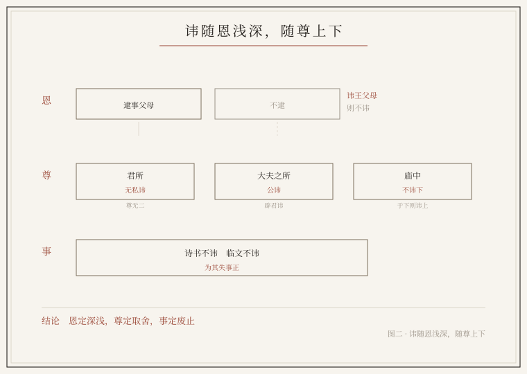

曲礼上 · 一·一百一十二 · 第 110 课
避讳的层级：是否及于祖父母，看是否赶上侍奉父母；君前无私讳，大夫所有公讳；读书、临文、庙中皆不讳。
说什么事：逮事父母，则讳王父母；不逮事父母，则不讳王父母。君所无私讳，大夫之所有公讳。《诗》《书》不讳，临文不讳。庙中不讳。
落在哪一层：制，兼及礼意。讲的是「讳有几重，各在何处止」。
为何编在此位：上节立讳之始与讳之边，此节定讳之层与讳之场。
【经】逮事父母，則諱王父母；不逮事父母，則不諱王父母。君所無私諱，大夫之所有公諱。《詩》《書》不諱，臨文不諱。廟中不諱。
【注】逮，及也。謂幼孤不及識父母，恩不至祖名。孝子聞名心瞿，諱之由心。君所無私諱，謂臣言於君前，不辟家諱，尊無二。大夫之所有公諱，辟君諱也。為其失事正。為有事於高祖，則不諱曾祖以下，尊無二也。於下則諱上。
逮 注「及也」。疏「王父母谓祖父母也。若及事父母，则讳祖也」。
王父母 祖父母。疏「祖是父之所讳，则子不敢言」。
私讳／公讳 私讳是家讳，公讳是君讳。
君所 注「臣言于君前」。疏「不辟家讳，尊无二」。
大夫之所 注「辟君讳也」。疏「今谓人于大夫之所，止得避公家之讳，不得避大夫讳……若兼为大夫讳，则君讳不尊也」。
诗书不讳 疏引何胤「《诗》《书》谓教学时也，临文谓礼执文行事时也」。
庙中不讳 注「有事于高祖，则不讳曾祖以下，尊无二也，于下则讳上」。
赶上侍奉过父母，就要避祖父母的名；没赶上侍奉父母，就不避祖父母的名。在国君面前不避家讳，在大夫面前要避国君之讳。读《诗》《书》不避，临文行事不避，庙中祝告不避。
一节五句，讲的是同一件事在不同位置的强度。讳的深浅由「恩」定，讳的取舍由「尊」定，讳的废止由「事」定。三条轴合起来，才是完整的避讳之礼。
第一层 恩不至则不讳 注「幼孤不及识父母，恩不至于祖名」。没见过的祖父母，其名对你不是名，只是字。
第二层 尊无二 君前无私讳，庙中不讳下。两处用同一句话：一尊不容二。任何一个场合只能有一个最高的敬，多了就互相削。
第三层 为其失事正 注五字，是诗书临文不讳的全部理由。若读书写字都要绕字，则文不成文，事不成事。敬不能以废事为代价。
第四层 于下则讳上 注「有事于高祖，则不讳曾祖以下」。同一庙中，向上避，向下不避。方向感极清楚。
与今日何干 规则要分场合。同一个忌讳，在饭桌上、在公文里、在追悼会上，强度不同。一刀切，最省事也最伤人。
| 左 | 右 |
|---|---|
| 逮事父母，则讳王父母 | 祖为父所讳，子不敢言 |
| 不逮事父母，则不讳王父母 | 恩不至祖名 |
| 君所无私讳 | 家讳不作于君前，尊无二 |
| 大夫之所有公讳 | 避君讳，不避大夫讳 |
| 诗书不讳，临文不讳 | 为其失事正 |
| 庙中不讳 | 尊无二，于下则讳上 |
画三级浅台阶，自下而上三块石面：最下一块石面上刻着一道被遮住的短横，中间一块石面的横线半遮半露，最上一块石面的横线完全清楚。台阶右侧另立一册摊开的书，书页上字迹连贯、无遮痕。台阶与书册之间以一道细竖线隔开。不画人、不写文字。赭色只用在最上一块石面那道清楚的横线上。
